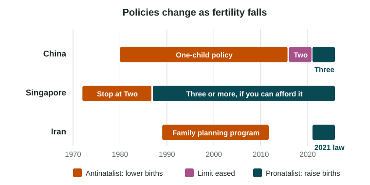

Births, deaths and migration change a population. Governments try to steer all three. A population policy is a government plan to change how many people are born, or who moves into or out of a country.
Pronatalist and antinatalist policies

| Pronatalist policy | Antinatalist policy | |
|---|---|---|
| Goal | Raise the number of births | Lower the number of births |
| When used | Fertility below replacement; a shrinking workforce | High fertility; fast growth |
| Voluntary tools | Payments per child, paid parental leave, cheap child care, tax breaks | Free contraception, family planning clinics, campaigns for small families |
| Coercive tools | Banning abortion or contraception (Romania, 1966) | Legal limits on family size (China, 1980 to 2015) |
| Examples | France and Sweden (family benefits); Hungary (2019 loan plan) | China (one-child policy); Singapore ("Stop at Two," 1970s) |
Antinatalist means against births; pronatalist means for births. On the exam, students often mix them up, so tie each word to its goal.
China: one, two, three
- 1980 to 2015: the one-child policy limited most urban couples to one child, with exceptions, such as many rural families whose first child was a girl. Births fell, though they had already been falling in the 1970s.
- Unintended effects: a preference for sons pushed the sex ratio at birth well above 105 in the 2000s (National Bureau of Statistics of China), and fewer young people now support more older ones.
- 2016: all couples could have two children. 2021: three, and fines for extra births ended. 2025: a national payment of 3,600 yuan a year for each child under 3 (National Health Commission, 2025).
- 2022: China’s population fell for the first time in decades (National Bureau of Statistics of China, 2023).
Never describe China as antinatalist without a year: its policy goal has reversed.
Other cases
- Singapore told families to "Stop at Two" in the 1970s. By 1987 fertility had fallen so far that it urged families who could afford it to have three or more.
- Iran opened free family planning clinics from 1989, and fertility fell very fast in the 1990s. In 2021 it passed a law limiting free contraception and rewarding births.
- Romania banned most abortions in 1966. Births nearly doubled in 1967 and then fell back, while deaths of women from unsafe abortions rose.
- South Korea has spent heavily on pronatalist policies since 2006, yet its TFR fell to 0.72 in 2023 (Statistics Korea, 2024). Payments alone may not offset the cost of housing, schooling and long work hours.
Immigration policies
An immigration policy sets who may move into a country, how many, and for how long. Countries with few births often use it to fill jobs, because a baby born in 2026 will not start work until about 2046.
- Canada ranks applicants with a points system (since 1967) that favors education, work skills and language.
- The United States ended quotas based on national origin in 1965 and gave priority to family members of people already in the country.
- Japan created a new visa for skilled foreign workers in 2019.
Immigration policies can also restrict entry, and both open and closed policies are debated within countries.
Judging a policy
Ask three questions: what was its goal, what were its intended and unintended effects, and how much did it change the numbers? Other forces, such as jobs, housing costs and women’s roles (the next topic), often matter as much as the policy itself.